3D 문제해설 다이어그램 뷰어 Atmospheric Serenity
채팅창의 3D 렌더링 이미지를 각 카드로 드래그하거나 클릭하여 로컬 캐시에 즉시 보관·열람할 수 있습니다.
차체 4대 진동 모드
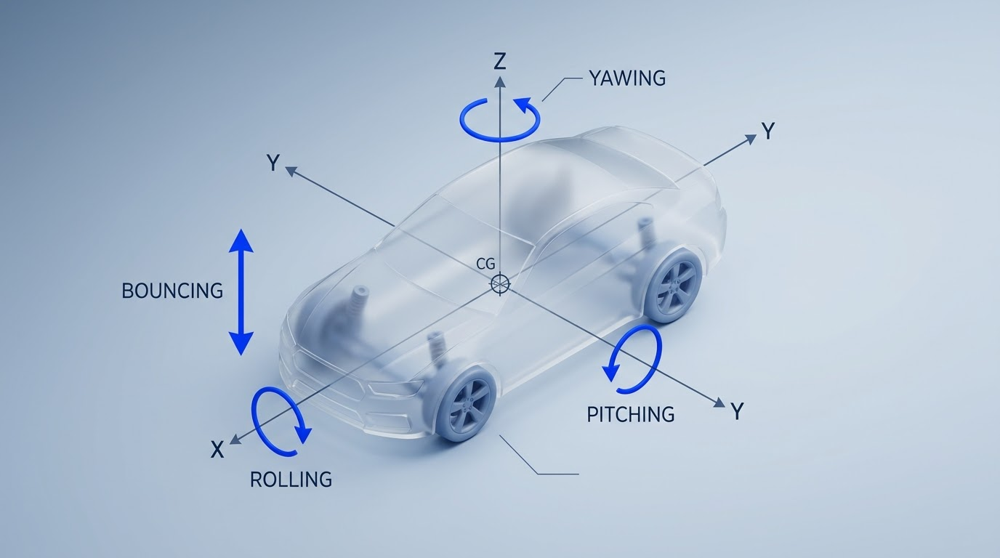
무게중심(CG) 기준 3차원 축선(X, Y, Z)에 대한 회전 모멘트 및 상하 병진 진동 역학을 한눈에 비교합니다.
- 바운싱: Z축 수직 상하 운동 (요철 통과)
- 피칭: Y축 중심 앞뒤 진동 (방지턱, 급제동)
- 롤링: X축 중심 좌우 회전 (선회 및 비탈길)
- 요잉: Z축 중심 평면 선회 (미끄러짐 및 스핀)
R-MDPS 랙 앤 피니언 조향 기구
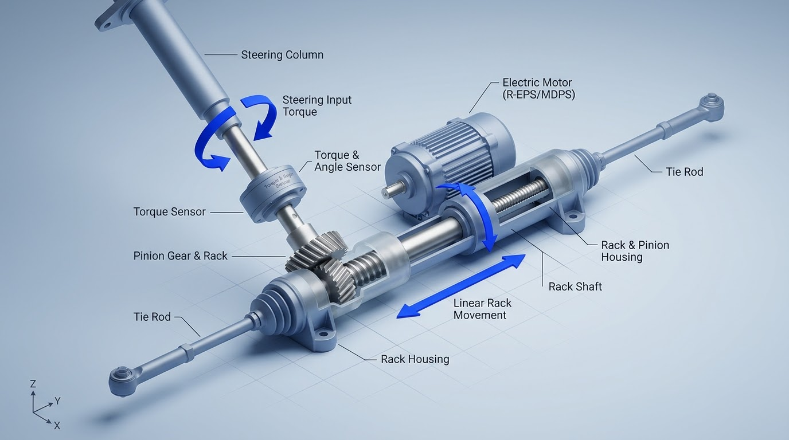
운전자 조향 입력 토크 검출부터 전동 모터 보조력을 통한 랙 샤프트 직선 변위 변환 과정을 도해화했습니다.
- 피니언-랙 기어 기계적 감속 기구
- R-MDPS 모터 랙축 직결 구동
- 비접촉식 토크 및 조향각 센서 계측
ABS 4센서 4채널 시스템
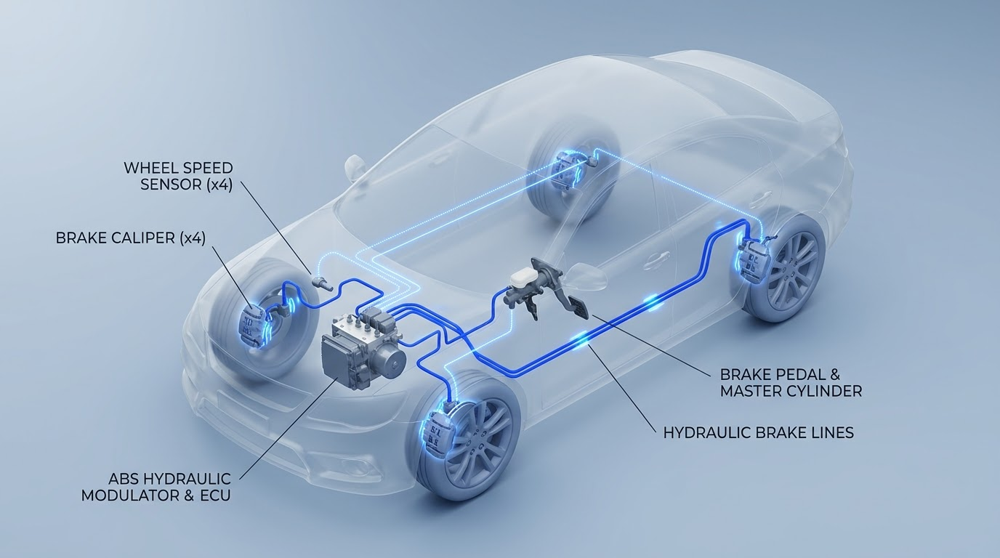
4개 차륜의 휠 스피드 센서 피드백을 기반으로 ABS 유압 모듈레이터가 각 캘리퍼 유압을 독립 제어합니다.
- 4센서 4채널 완전 독립 유압 라인
- 감압 / 유지 / 증압 고속 솔레노이드 제어
- 차륜 록(Lock-up) 방지 및 조향성 유지
커먼레일 (CRDi) 연료 시스템
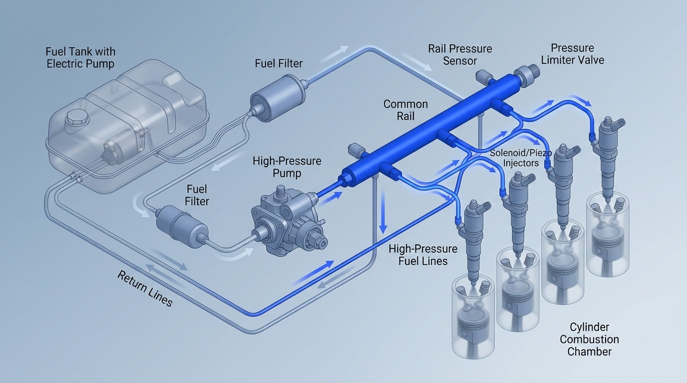
연료탱크 저압 펌프 $\to$ 고압 펌프 $\to$ 커먼레일 파이프 $\to$ 고압 인젝터로 이어지는 연료 이송 순서를 보여줍니다.
- 저압 펌프 $\to$ 고압 펌프 $\to$ 레일 $\to$ 인젝터
- 레일 압력 센서 (RPS) 및 압력 제한 밸브
- 다단 분사(파일럿/주분사/포스트분사)
ETC 스로틀 바디 및 흡기 분사
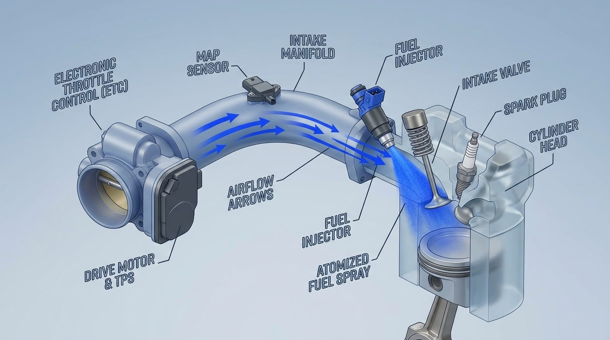
전자식 스로틀 밸브 개도량과 MAP 센서 압력에 따라 인젝터가 흡기 밸브를 향해 미립화 연료를 분사합니다.
- ETC 모터 구동 및 TPS 듀얼 센서
- 흡기 매니폴드 부압(MAP) 및 공기량 계측
- 이론공연비(14.7:1) 혼합기 형성
HVAC 에어컨 4대 냉매 사이클
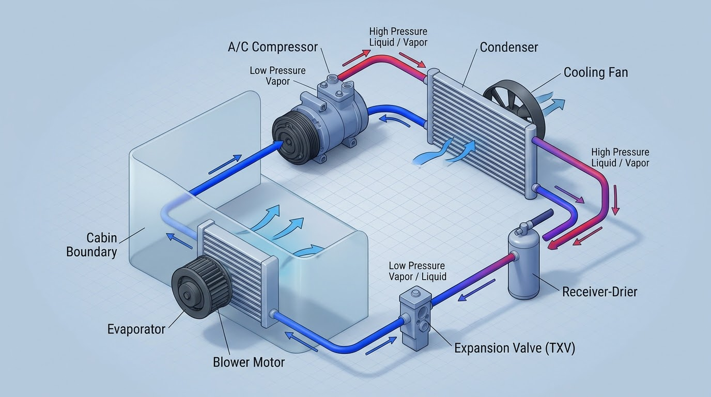
압축기, 응축기, 팽창밸브(TXV), 증발기 사이에서 고압/저압 냉매의 기화·액화 열교환 원리를 나타냅니다.
- 압축기: 저온저압 기체 $\to$ 고온고압 기체
- 응축기: 고온고압 기체 $\to$ 고온고압 액체
- 팽창밸브(TXV): 고압 액체 $\to$ 저압 미무액
- 증발기: 저압 액체 기화열 흡수(실내 냉각)
CAN 버스 및 종단저항 (120Ω)
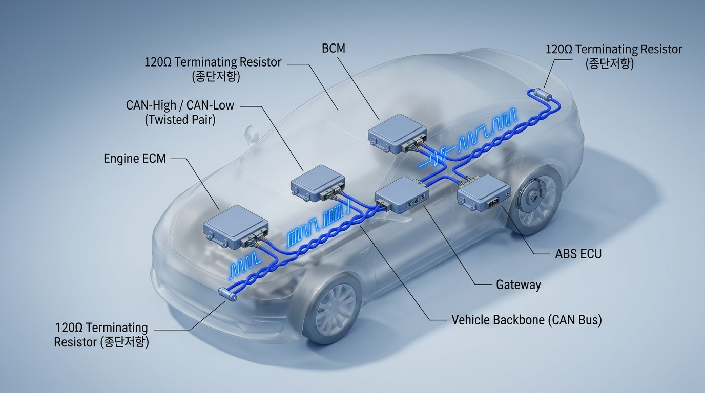
트위스티드 페어 차동 신호 버스 양 끝단의 120Ω 종단저항과 게이트웨이를 통한 제어기 통신 구조입니다.
- CAN-H / CAN-L 트위스티드 페어 노이즈 상쇄
- 양단 120Ω 종단저항 (합성 저항 60Ω)
- 중앙 게이트웨이 및 멀티마스터 프로토콜
토크컨버터 내부 유체 순환
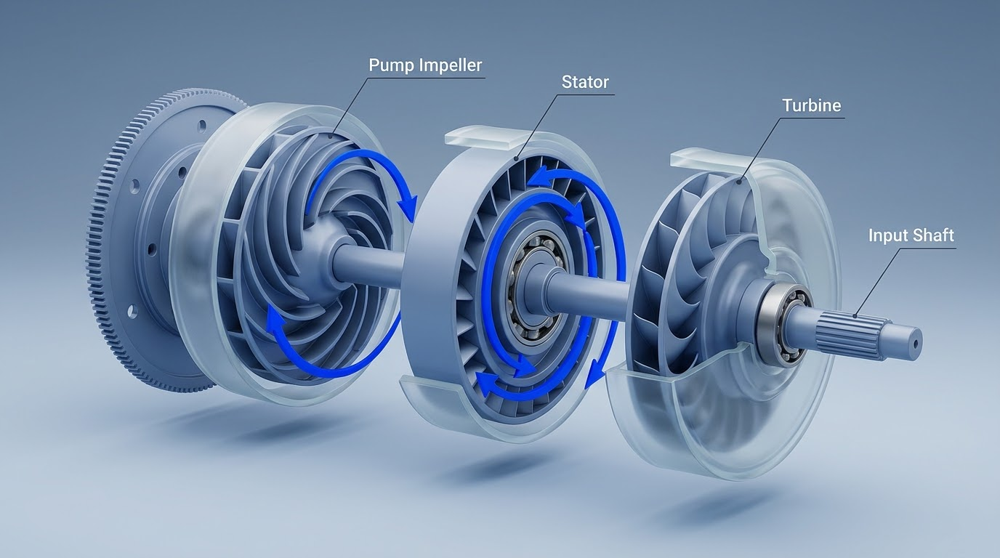
엔진 구동 펌프 임펠러와 터빈 사이에서 원웨이 클러치 스테이터가 오일 방향을 변환해 토크를 증대합니다.
- 펌프 $\to$ 터빈 $\to$ 스테이터 유체 소용돌이 순환
- 원웨이 스프래그 클러치 역회전 방지
- 스톨 구간 최대 2~3배 토크 변환비
PCV 환원 및 DPF / SCR 후처리
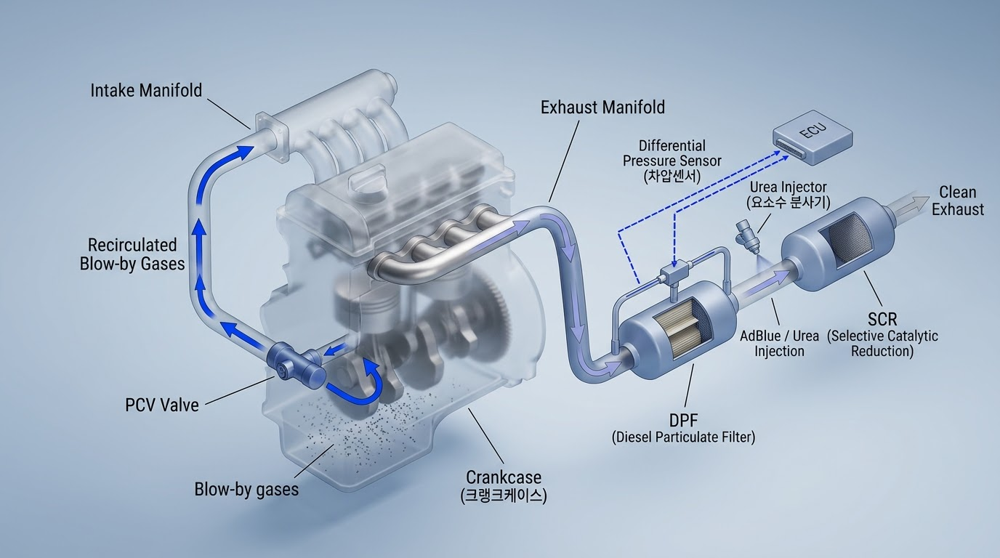
크랭크케이스 블로바이가스(HC) 재순환 루프와 배기 매니폴드 DPF 차압센서 및 SCR 요소수 분사 회로입니다.
- PCV 밸브 블로바이가스 흡기 포트 환원
- DPF 전후단 차압센서 매연 포집량 산출
- SCR 요소수(AdBlue) 분사를 통한 질소산화물 환원
휠 얼라인먼트 4대 기하각 (캠버·캐스터·KPI·토인)
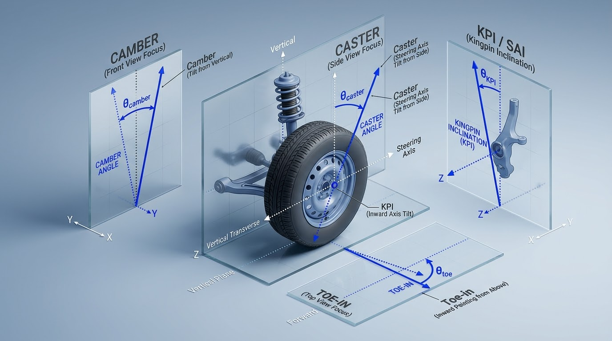
정면·측면·상면 시선을 반투명 글래스 기준면으로 나눠, 네 요소의 기준축과 기울기 각도를 한눈에 비교합니다.
- 캠버: 정면(YZ) 바퀴 중심선과 수직선이 이루는 각도
- 캐스터: 측면(XZ) 조향축(스트럿)의 전후 기울기
- 킹핀 경사각(KPI/SAI): 너클 축의 안쪽 기울기, 복원력 발생
- 토인: 상면(XY)에서 앞바퀴 간격이 뒤쪽보다 좁은 형상
자동변속기 유성기어장치 동력 전달
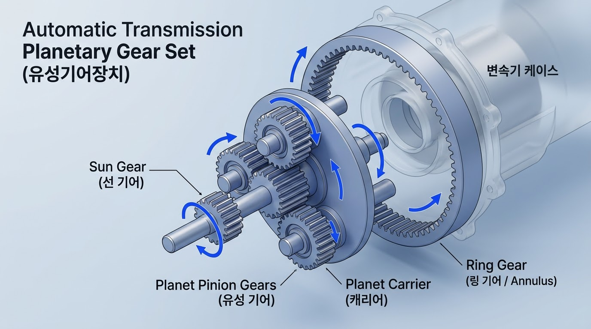
선 기어, 유성 기어(캐리어), 링 기어가 동심축 상에서 맞물리는 분해도로, 고정 요소와 입력 요소에 따른 동력 흐름을 보여줍니다.
- 선 기어(중심) · 유성 기어/캐리어(중간) · 링 기어(외곽)
- 고정 요소와 입력 요소 조합에 따른 감속·증속·직결
- 고정 요소에 따른 회전 방향 역전(후진) 원리
MDPS 모터 구동 3대 방식 (C / P / R)
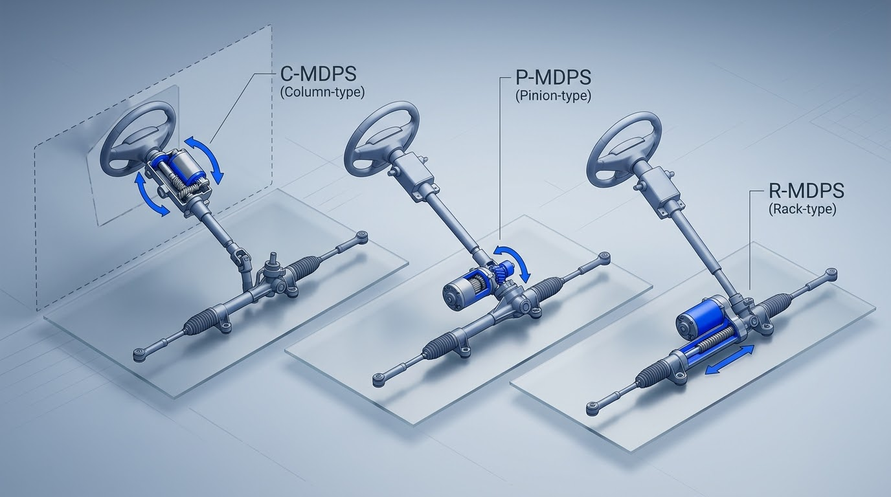
같은 조향 기구에서 보조 전동 모터가 장착되는 위치와 감속 기구의 차이를 나란히 비교합니다.
- C-MDPS: 실내 조향 컬럼축에 모터 장착 (소형차, 공간 효율)
- P-MDPS: 기어박스 피니언 축에 모터 장착 (중형차)
- R-MDPS: 랙 샤프트에 모터 직결 (대형·고급차, 정밀 응답성)
상용차 공기 브레이크 전체 계통도
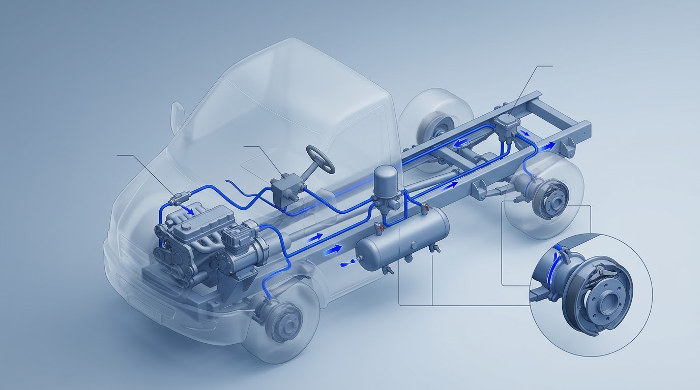
엔진 구동 공기 압축기에서 시작해 탱크·브레이크 밸브·릴레이 밸브를 거쳐 차륜 브레이크 챔버와 S-캠까지 이어지는 공기 흐름을 한 번에 봅니다.
- 언로더 밸브: 규정 압력(5~7kg/cm²) 도달 시 압축기를 무부하 운전
- 안전밸브: 탱크 초과압(20bar) 방출
- 공기탱크: 압력 유지 및 제동 공기 저장
- 브레이크 챔버 + S-캠: 공압으로 캠을 돌려 라이닝을 확장
판 스프링 & 섀클 스팬 변화 기구
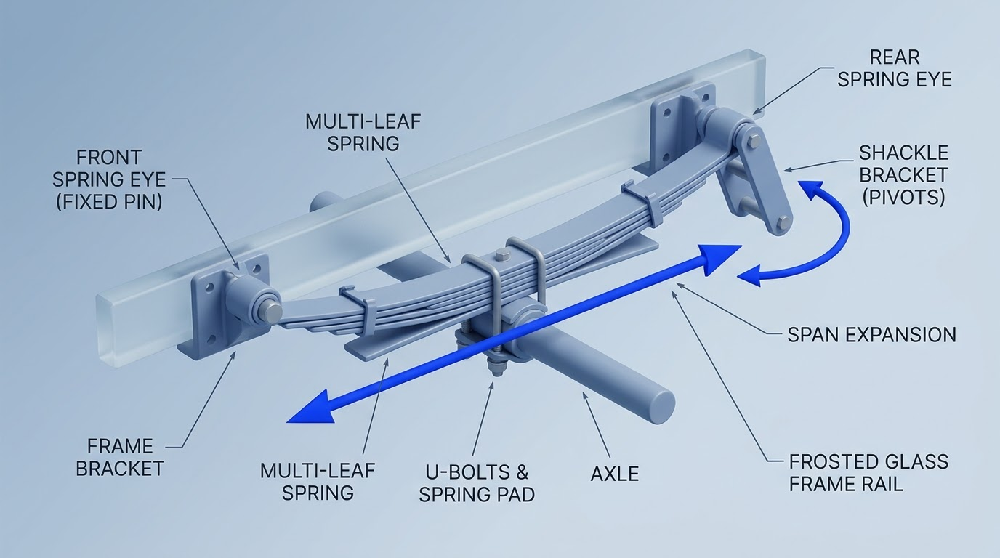
하중으로 판 스프링이 휘면 앞쪽 스프링 아이 핀을 기준으로 뒤쪽 섀클이 회전하며, 스팬(앞뒤 고정점 거리) 신장 변화를 흡수합니다.
- 스팬(Span): 스프링 앞뒤 중심 거리
- 스프링 아이: 고정 핀 기준 회전 중심
- 섀클(Shackle): 스팬 길이 변화를 수용하는 회전 링크
- 하중이 커질수록 섀클이 기울며 스팬이 늘어남
VVT 유압 캠 페이저 & 밸브 오버랩
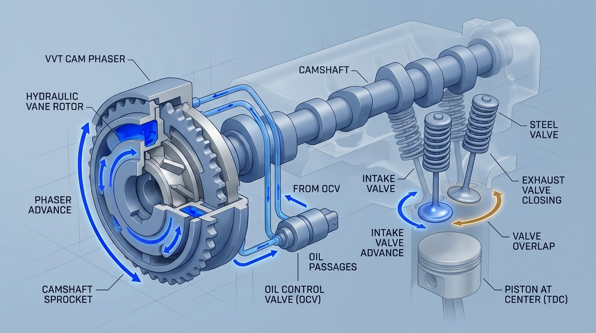
OCV로 유로를 바꿔 캠샤프트 스프로킷의 베인 로터를 돌리면 흡기 밸브 개폐 시기가 진각되고, 상사점 부근에서 배기 밸브와 함께 열리는 오버랩이 생깁니다.
- OCV: 오일 유로를 바꿔 페이저 위치 제어
- 베인 로터: 유압으로 캠 위상을 진각·지각
- 밸브 오버랩: 상사점 부근 흡·배기 동시 개방 구간
- 내부 EGR: 오버랩 구간의 배기가스가 연소실에 잔류
크랭크각 센서 (인덕티브 방식)
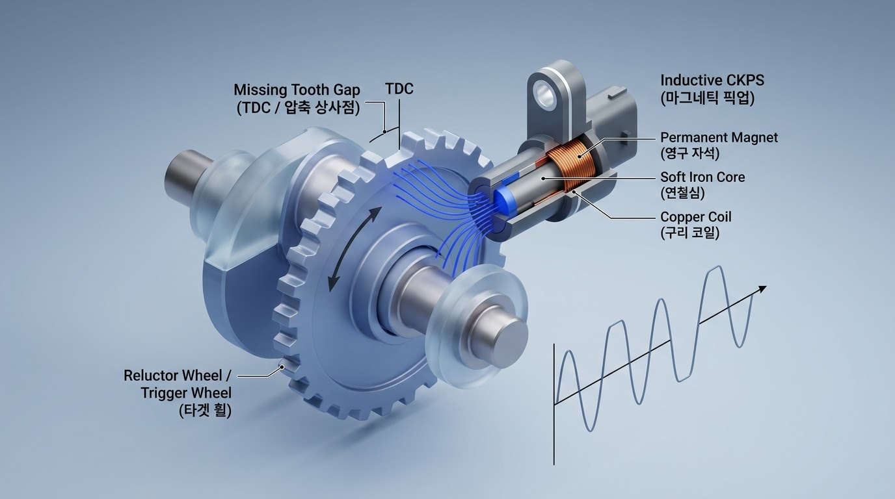
릴럭터 타겟 휠의 이빨이 센서 앞을 지나며 교류 신호를 만들고, 결손 이빨(Missing tooth) 위치가 상사점(TDC) 기준점이 됩니다.
- 인덕티브 마그네틱 픽업: 자석 코어와 코일로 교류 전압 발생
- 릴럭터 타겟 휠: 이빨 간격으로 회전속도 판별
- 결손 이빨: 기준 펄스로 상사점과 실린더 위치 인식
- 회전이 빠를수록 파형 진폭과 주파수 증가
맥퍼슨 스트럿 vs 더블 위시본(SLA)
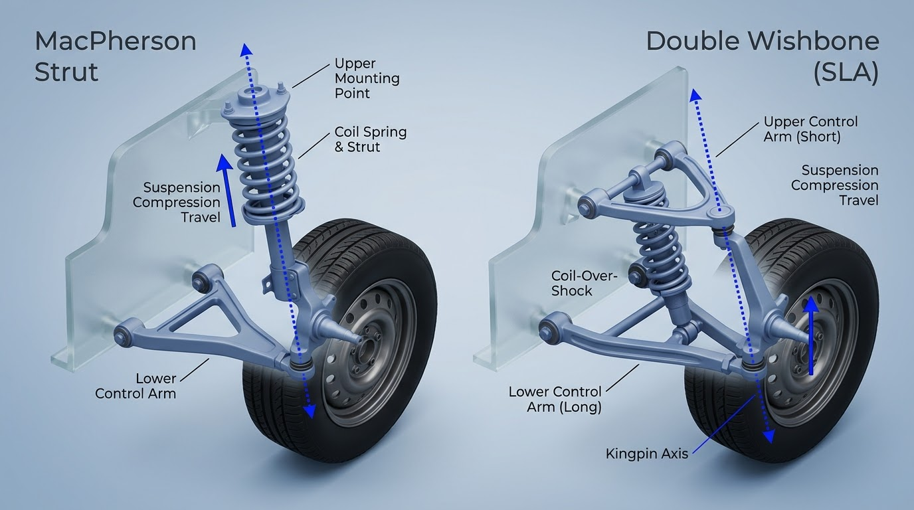
맥퍼슨 스트럿은 스트럿 일체형으로 단순하고, 더블 위시본(SLA)은 위·아래 암의 길이 차이로 캠버 변화를 보정합니다.
- 맥퍼슨 스트럿: 쇼크업소버와 코일이 일체형, 구조가 단순
- 더블 위시본(SLA): 어퍼암이 로워암보다 짧아 주행 중 부(-) 캠버 증가
- 어퍼암과 로워암 길이 비율로 캠버 변화량 설계
- 스트럿 방식은 공간 효율, 위시본 방식은 접지 안정성 우수
지르코니아(ZrO₂) 산소센서
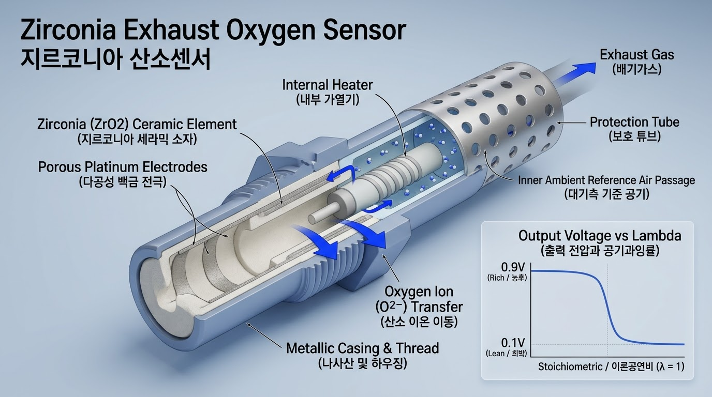
배기 중 산소 농도차에 따라 지르코니아 세라믹 양면 백금 전극 사이에 기전력이 생기며, 이론 공연비 부근에서 전압이 급변합니다.
- 농담 전지 원리: 배기·대기 산소 농도차로 0.1~0.9V 발생
- 백금 전극 코팅: 지르코니아 표면에서 기전력 집전
- 내부 히터: 저온에서도 활성 온도 유지
- 농후(0.9V 근처)·희박(0.1V 근처) 판별로 공연비 피드백 제어
차동 기어장치 선회 동력 전달
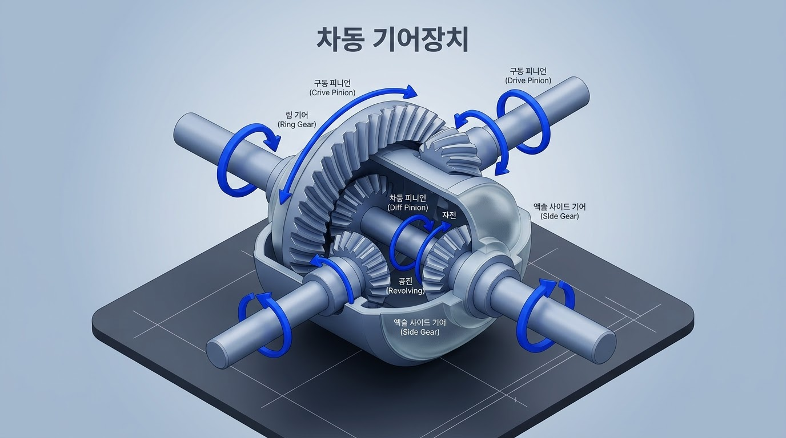
구동 피니언에서 링 기어, 차동 케이스로 이어진 회전력이 선회 시 차동 피니언의 자전과 공전으로 외측 바퀴를 내측보다 빠르게 돌립니다.
- 구동 피니언 → 링 기어 → 차동 케이스 순서로 회전력 전달
- 직진 시: 차동 피니언이 자전하지 않아 좌우 바퀴 회전수 동일
- 선회 시: 차동 피니언이 자전하며 외측 사이드 기어 회전 증가
- 내측 바퀴는 같은 양만큼 감속되어 속도차 흡수
전자제어 가변용량 터보차저 (VGT)
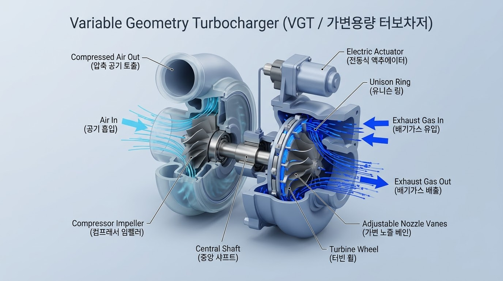
유니슨 링이 가변 노즐 베인 각도를 바꿔 배기 유속을 조절하며, 저속에서는 베인을 닫아 과급압을 높이고 고속에서는 열어 배압을 낮춥니다.
- 전동식 액추에이터가 유니슨 링을 회전시켜 베인 각도 조절
- 저속: 베인을 닫아 배기 유속 증가, 과급 효율 향상
- 고속: 베인을 열어 배압 감소, 과급 과다 방지
- 컴프레서 임펠러로 공기를 강하게 압축해 공급
드가르봉식 단통형 쇽업소버
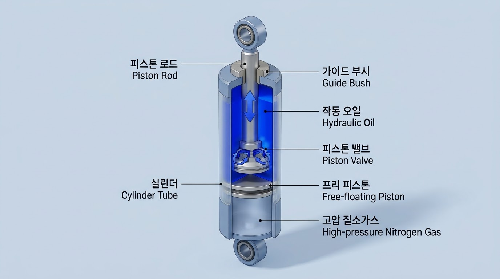
프리 피스톤이 작동 오일실과 고압 질소가스실을 분리하고, 피스톤 오리피스의 유압 저항이 감쇠력을 만들며 고압 가스가 캐비테이션을 막습니다.
- 프리 피스톤: 오일실과 질소가스실을 완전 분리
- 고압 질소가스(약 20~30bar): 오일 기포(캐비테이션) 발생 방지
- 피스톤 밸브 오리피스: 유압 저항으로 감쇠력 발생
- 단통 구조라 방열성과 감쇠 안정성이 우수
스테빌라이저 바 (롤링 억제)
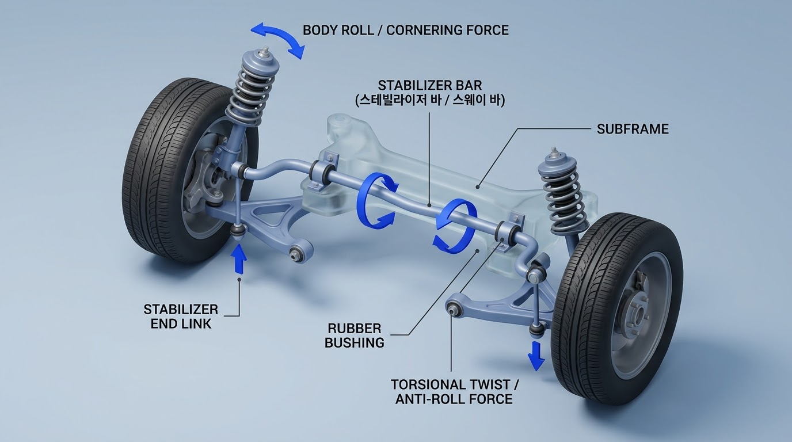
한쪽 바퀴가 턱을 넘어 서스펜션이 압축되면 U자형 토션 바가 비틀리며 복원 모멘트가 생겨 반대쪽 바퀴를 함께 당겨 차체 롤링을 억제합니다.
- 서브프레임에 부싱으로 지지된 U자형 토션 바 구조
- 한쪽 압축 시 토션 바에 비틀림 탄성 모멘트 발생
- 반대쪽 바퀴를 끌어 올려 좌우 높이 차이 감소
- 직진 안정성은 높이고 승차감은 크게 해치지 않음
파스칼의 원리 (유압 브레이크)
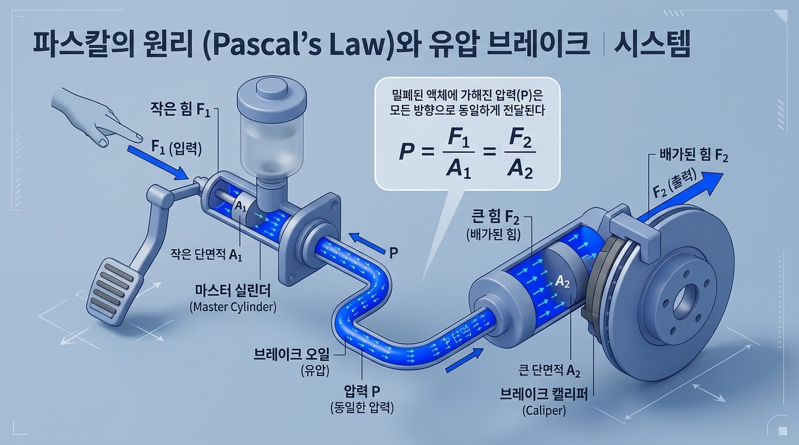
밀폐된 브레이크 오일 라인에서 마스터 실린더 압력 P = F₁/A₁이 그대로 전달되어, 큰 단면적 캘리퍼 피스톤에서 F₂ = P × A₂만큼 증폭된 제동력이 나옵니다.
- P = F₁ / A₁ = F₂ / A₂ (밀폐 유체 내 압력 동일)
- 마스터 실린더 작은 단면적(A₁): 페달 힘을 압력으로 변환
- 캘리퍼 큰 단면적(A₂): 압력을 큰 제동력으로 증폭
- 면적비가 클수록 같은 페달 힘에 큰 제동력 발생
자동변속기 밸브바디 & 다판 습식 클러치
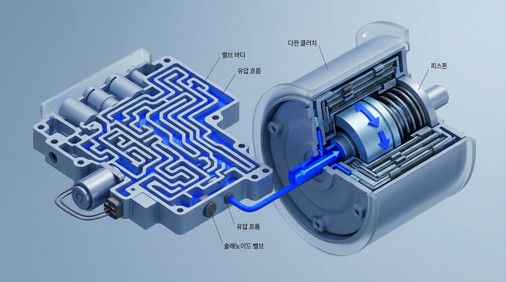
솔레노이드 밸브가 유로를 열면 어플라이 피스톤이 리턴 스프링을 누르고, 교대로 배치된 마찰판과 스틸판을 압착해 동력을 단속합니다.
- 밸브 바디: 미로형 오일 유로로 솔레노이드 밸브 작동 유압 분배
- 어플라이 피스톤: 유압으로 밀어 마찰판 압착
- 리턴 스프링: 유압 해제 시 피스톤 복귀
- 마찰판과 스틸판 교대 배치로 큰 토크 전달
삼원촉매 변환기 내부 반응
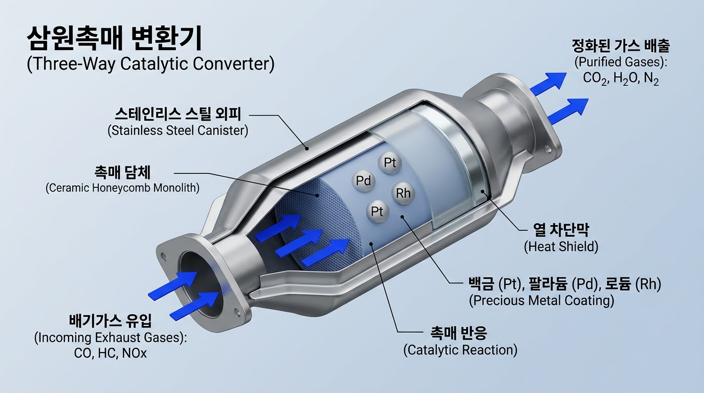
세라믹 허니컴 담체에 코팅된 백금(Pt), 팔라듐(Pd), 로듐(Rh)이 CO, HC는 산화시키고 NOx는 환원시켜 CO₂, H₂O, N₂로 정화합니다.
- 허니컴 담체: 표면적을 넓혀 귀금속 접촉 면적 확보
- Pt·Pd: CO와 HC를 산화 (CO₂, H₂O 생성)
- Rh: NOx를 환원 (N₂ 생성)
- 이론 공연비 부근에서 3원 정화 효율이 가장 높음
조향 로터리 제어 밸브 & 안전 체크 밸브
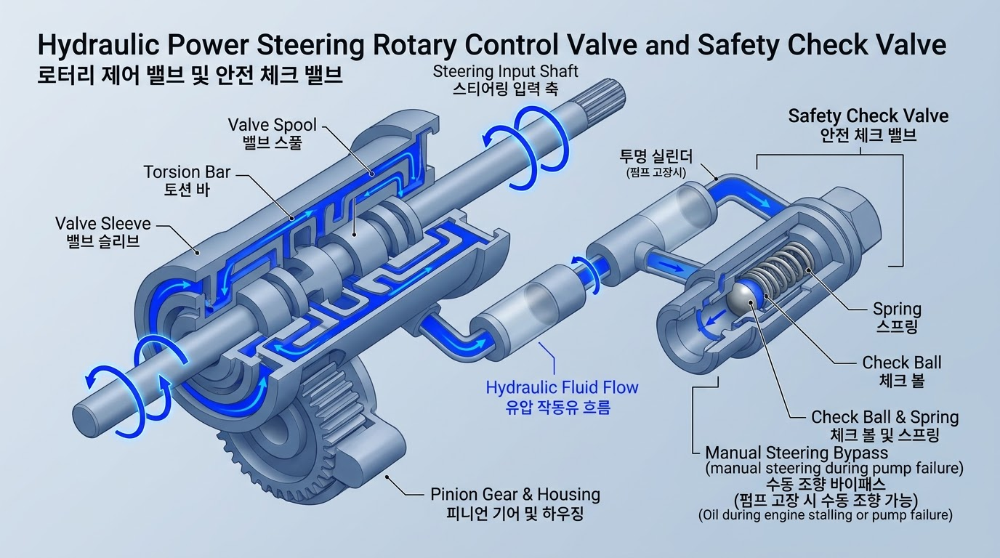
핸들 조작 시 토션 바가 비틀려 스풀과 슬리브 홈이 엇갈리며 파워 실린더 유로를 바꾸고, 펌프 고장 시에는 안전 체크 밸브가 수동 조향 경로를 열어 줍니다.
- 토션 바: 핸들 토크에 비례해 미세하게 비틀림
- 스풀과 슬리브의 홈 엇갈림으로 오일 유로 절환
- 엔진 정지·펌프 고장 시 안전 체크 밸브가 바이패스 유로 개방
- 운전자가 수동으로 조향할 수 있도록 보장
매니폴드 게이지 세트 회로 연결
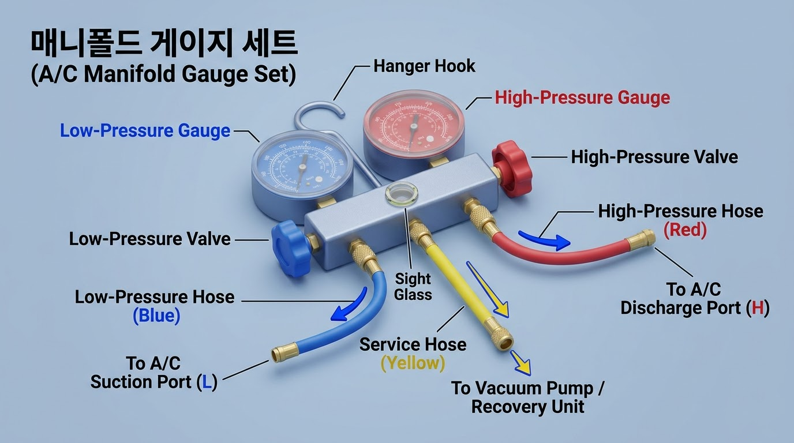
저압 게이지(파랑)는 L 포트, 고압 게이지(빨강)는 H 포트에 연결하고, 중앙 서비스 호스(노랑)는 진공 펌프나 냉매 충전기로 연결합니다.
- 저압 게이지(파랑) → 저압 흡입 포트(L)
- 고압 게이지(빨강) → 고압 토출 포트(H)
- 중앙 서비스 호스(노랑) → 진공 펌프 또는 냉매 충전기
- 사이트 글래스로 냉매 흐름과 상태 확인, 핸들 밸브로 개폐
CAN 차동 전압 파형 (우성 vs 열성)
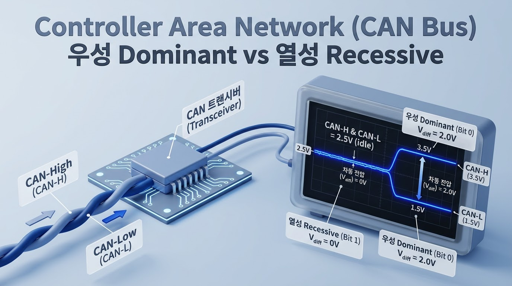
CAN-H와 CAN-L 차동 전압으로 비트를 판단합니다. 우성(0)은 차동 2.0V, 열성(1)은 차동 0V입니다.
- 열성(Bit 1): CAN-H·CAN-L 모두 2.5V 대기, 차동 전압 0V
- 우성(Bit 0): CAN-H 3.5V 상승, CAN-L 1.5V 하강, 차동 전압 2.0V
- 트랜시버를 거쳐 오실로스코프에 디지털 파형으로 출력
HLA 유압 밸브 간극 조절기
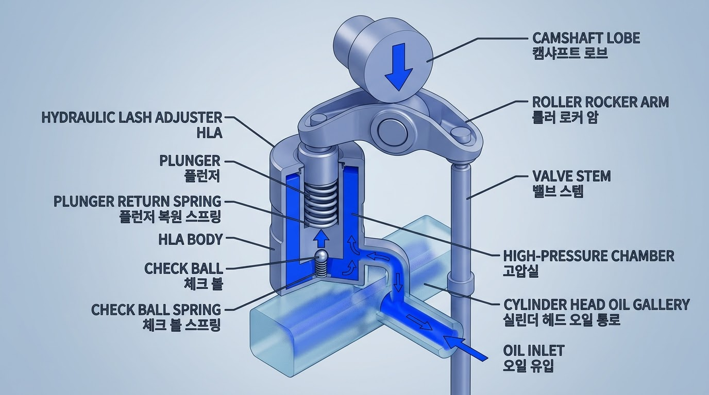
캠 로브가 롤러 로커 암을 누를 때 오일 갤러리의 엔진 오일이 체크 볼을 지나 고압실을 채웁니다. 비압축성 오일로 밸브 간극을 0으로 유지합니다.
- 경로: 오일 갤러리 → 체크 볼 → 고압실
- 오일의 비압축성으로 밸브 스템과의 간극 0 유지
- 태핏 소음과 밸브 타이밍 오차 방지
히트펌프 사방밸브 냉난방 전환
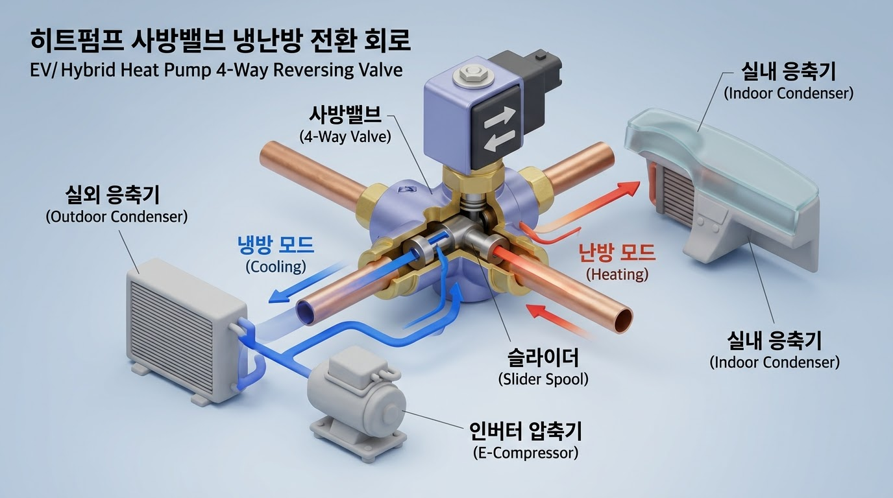
인버터 전동 압축기에서 토출된 고온·고압 냉매를 솔레노이드와 슬라이더 스풀이 4-Way 사방밸브에서 유로 전환합니다.
- 냉방 모드: 실외 응축기로 보내 외부로 방열
- 난방 모드: 실내 응축기로 전환, 엔진 열원 없이 실내 온풍 공급
- 청색/적색 유로선으로 냉방·난방 경로 구분
애커먼 조향 기하학 (선회 시 좌우 조향각)
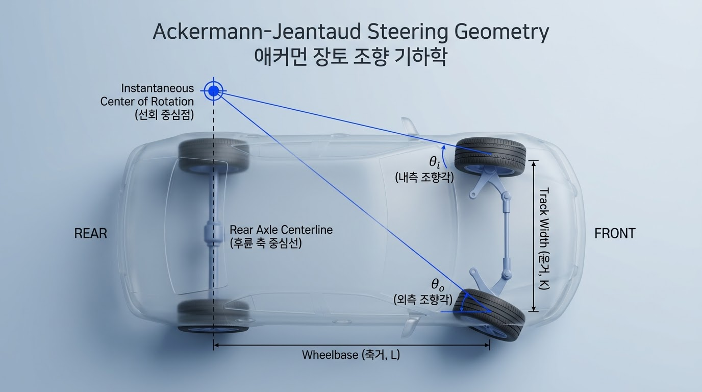
선회 시 안쪽 바퀴의 선회 반경이 작아 안쪽 조향각(θi)이 바깥쪽 조향각(θo)보다 항상 크게 꺾여야 합니다. 두 앞바퀴 회전축 연장선은 후륜 차축 중심선 연장선상의 순간 선회 중심(Instantaneous Center of Rotation)에서 만납니다.
- θi(내측 조향각) > θo(외측 조향각): 안쪽 바퀴가 더 크게 꺾임
- 축거(Wheelbase, L)·윤거(Track Width, K)로 선회 중심 위치 결정
- 좌우 조향각 관계가 맞지 않으면 사이드 슬립 발생
토크컨버터 록업 댐퍼 클러치 직결
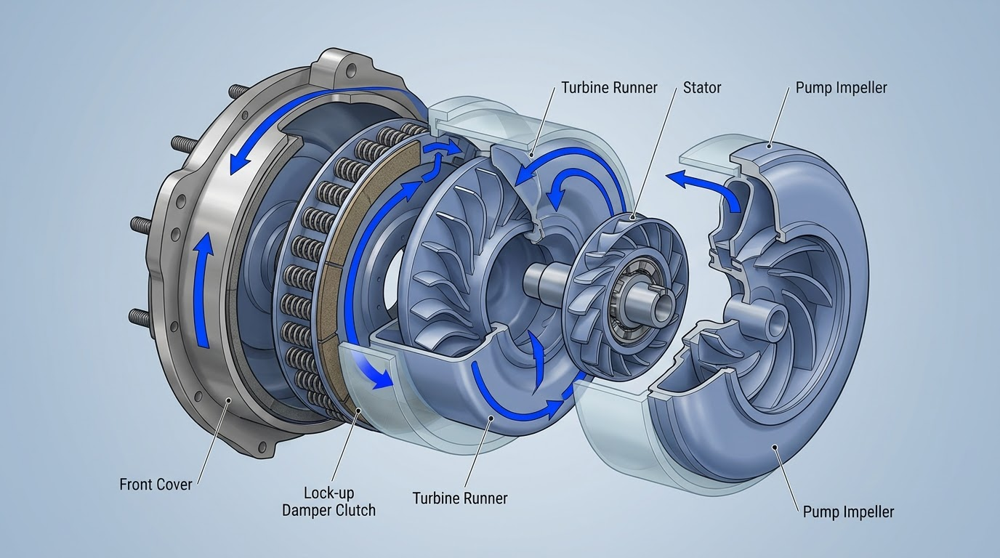
정속·고속 주행 시 록업 작동 압력으로 록업 클러치 플레이트를 프런트 커버에 압착해 임펠러(펌프)와 터빈을 1:1로 기계 직결합니다. 유체 슬립 손실이 없어 연비가 좋아집니다.
- 직결: 록업 댐퍼 클러치가 프런트 커버에 압착되어 펌프 임펠러와 터빈을 기계 연결
- 3요소 구성: 펌프 임펠러(Pump Impeller) · 터빈 러너(Turbine Runner) · 스테이터(Stator)
- 오일 흐름: 펌프 → 터빈 → 스테이터 → 펌프 순환 (직결 시 유체 순환 없음)
- 록업 댐퍼 클러치의 스프링이 폭발 행정의 비틀림 진동 흡수
증발가스 제어장치 (캐니스터·PCSV)
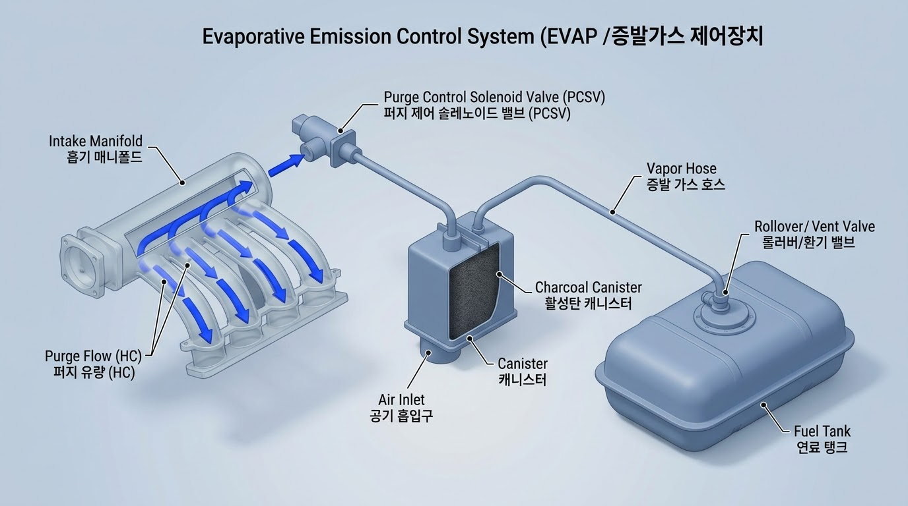
연료 탱크에서 증발한 HC 가스를 대기로 방출하지 않고 활성탄 캐니스터에 흡착합니다. 시동 후 ECU가 PCSV 듀티율을 조절해 흡기 서지탱크로 보내 연소실에서 재연소시킵니다.
- 포집: 연료 탱크 → 활성탄 캐니스터 임시 흡착
- 퍼지: ECU가 PCSV 듀티율 제어 → 흡기 서지탱크 유입
- 유입된 HC는 연소실에서 재연소
전자제어 현가장치 (ECS) 감쇠력 가변 쇽업소버
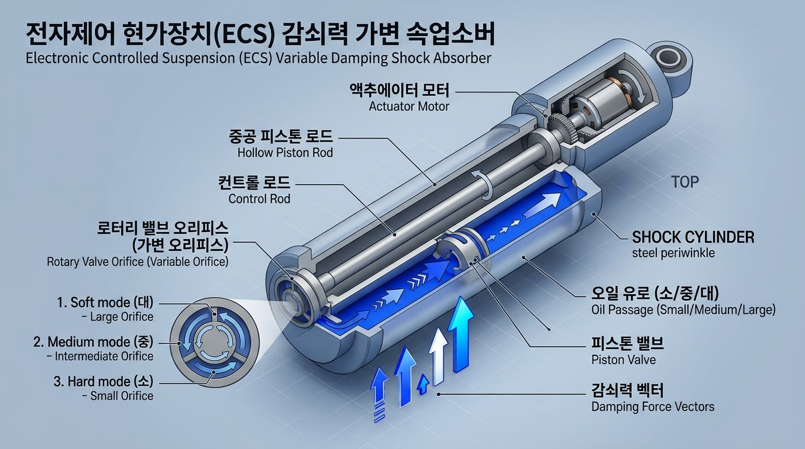
쇽업소버 상단의 스텝 액추에이터 모터가 중공 피스톤 로드 내부의 컨트롤 로드를 회전시켜, 하단 피스톤 밸브의 가변 로터리 오리피스(Rotary Orifice) 구멍 크기를 조절합니다. 구멍 크기에 따라 감쇠력이 세 단계로 바뀝니다.
- Soft (대 구멍): 오일 유로 단면적 확대로 부드러운 승차감 (일반 주행)
- Medium (중 구멍): 표준 감쇠력 제어
- Hard (소 구멍): 오일 저항 극대화로 급제동 다이브 방지 및 고속 선회 롤링 방지
커먼레일 전자제어 고압 연료 인젝터 (Piezo / Solenoid)
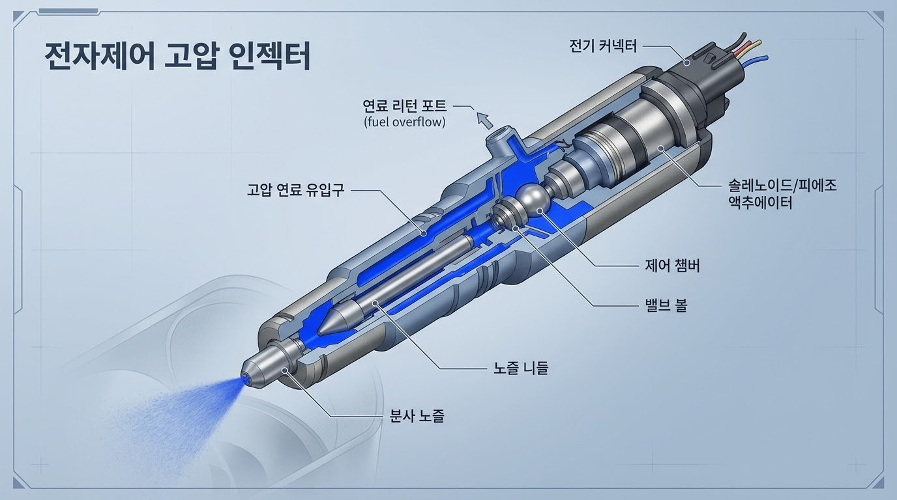
솔레노이드/피에조 액추에이터가 통전되면 밸브 볼이 열리고, 노즐 니들 상부 제어실(Control Chamber)의 고압 연료가 리턴 포트로 빠져나갑니다. 제어실 압력이 떨어지면 니들이 상승하고, 팁의 다공 노즐을 통해 초고압 미립화 분무가 연소실로 뿜어집니다.
- 통전 → 밸브 볼 개방 → 제어실 고압 연료 리턴 → 니들 상승
- 니들 상승으로 다공 노즐 분사 (초고압 미립화)
- 제어실 압력 밸런스가 분사 개시·종료와 분사량을 결정
듀얼 클러치 변속기 (DCT) 동심 이중 입력축
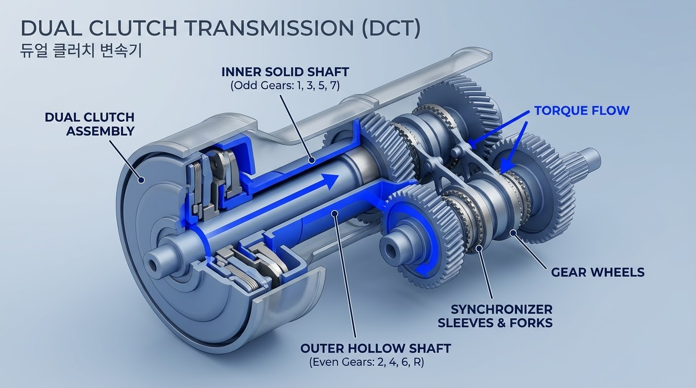
두 개의 독립된 클러치 팩과 동심원 축으로 포개진 이중 입력축 구조입니다. 한 기어가 동력을 전달하는 동안 다음 변속단이 미리 맞물려 있어, 클러치만 교대로 체결되며 구동 토크 단절(Torque Interruption)이 발생하지 않습니다.
- 내부 중실축(Inner Solid Shaft): 홀수단(1, 3, 5, 7단) 기어 구동
- 외부 중공축(Outer Hollow Shaft): 짝수단(2, 4, 6단) 및 후진(R) 기어 구동
- 클러치 교대 체결로 동력 단절 없는 변속
브레이크 진공 배력 장치 (Vacuum Booster)
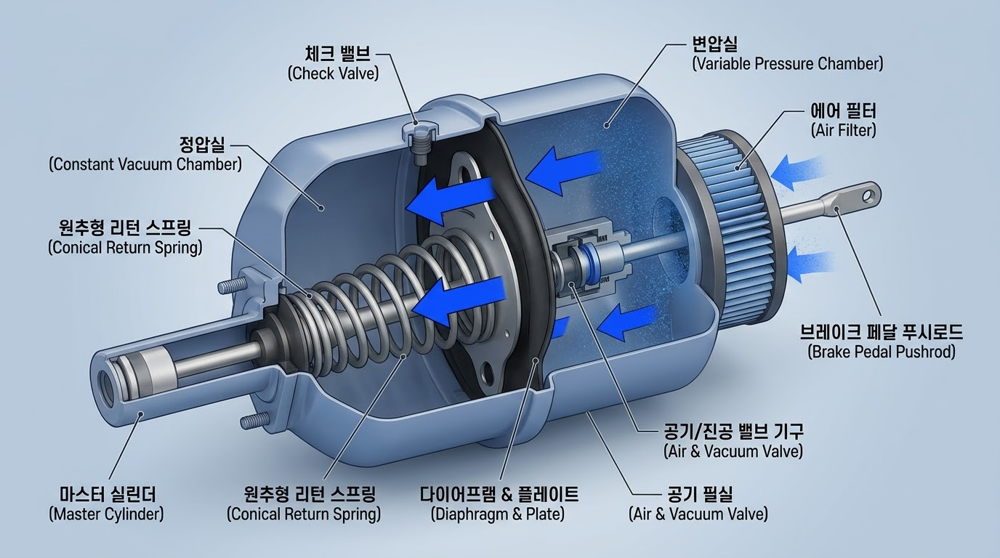
대형 다이어프램을 경계로 전방의 정압실(엔진 흡기 매니폴드에 연결된 진공실)과 후방의 변압실(Variable Pressure Chamber)이 나뉩니다. 페달을 밟으면 진공 밸브가 닫히고 공기 밸브가 열려 대기압이 변압실로 유입되고, 이 압력차(ΔP)로 다이어프램이 마스터 실린더 푸시로드를 강하게 밉니다.
- 정압실: 엔진 흡기 매니폴드 연결 → 항상 진공
- 페달 조작: 진공 밸브 폐쇄 · 공기 밸브 개방 → 변압실에 대기압 유입
- 압력차(ΔP)가 다이어프램을 밀어 제동력 증폭
하이드로백 실차 장착 위치 (엔진룸 투영)

하이드로백의 개념과 엔진룸 안의 실제 장착 위치를 실차 투영으로 나타냈습니다. 운전석 브레이크 페달의 푸시로드가 방화벽을 뚫고 하이드로백 중심축에 직결됩니다.
- 방화벽(Firewall) 직결: 페달 푸시로드 → 하이드로백 중심축
- 하이드로백 본체: 방화벽에 밀착된 지름 약 20~25cm의 원통형 드럼
- 전면에 마스터 실린더 결합, 상단 반투명 리저버 탱크(노란 캡) 장착
- 상단 두꺼운 진공 호스로 흡기 매니폴드에 연결되어 부압 공급
열선식 공기유량 센서 (Hot-Wire MAF)
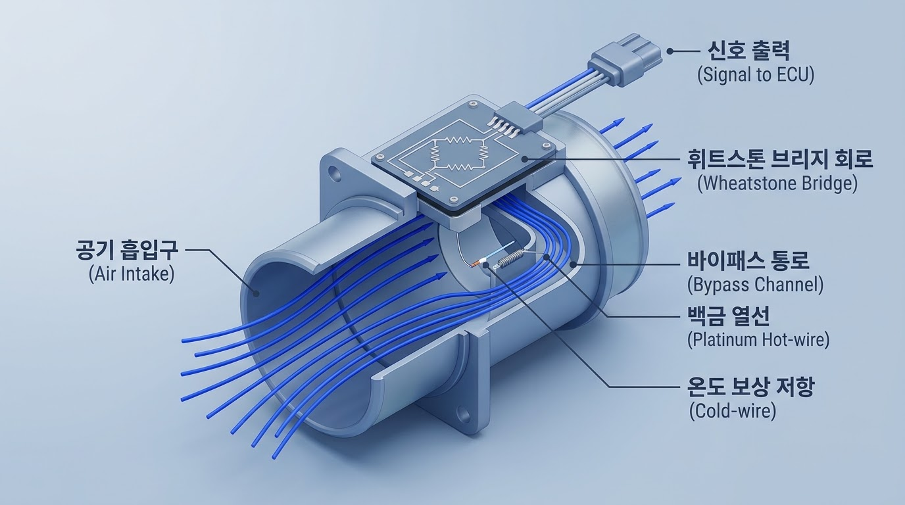
흡기 덕트 내부 바이패스 통로의 백금 열선(Platinum Hot-wire)과 온도 보상 저항(Cold-wire)을 상단 휘스톤 브리지 회로가 제어합니다. 흡입 공기가 열선을 식히면 일정한 온도차를 유지하도록 가열 전류가 증가하고, 이 전류 변화를 전압 신호로 바꿔 ECU에 보냅니다.
- 백금 열선 + 온도 보상 저항(Cold-wire)의 일정 온도차 유지
- 공기량 증가 → 열선 냉각 → 가열 전류 증가
- 가열 전류 변화를 전압 신호로 변환해 ECU 전달 (질량 유량 직접 계측)
차속 감응형 전자제어 조향장치 (SSPS)
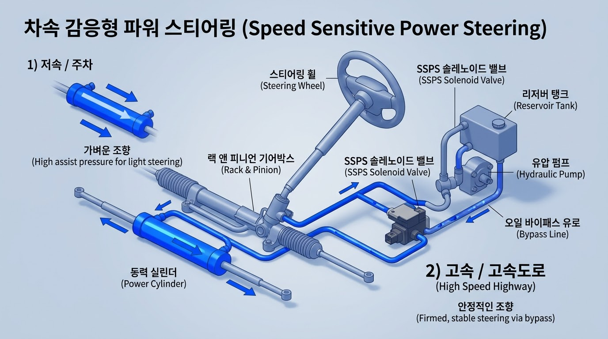
차속에 따라 SSPS 솔레노이드 밸브를 제어해 운전대 조작감을 바꿉니다. 저속·주차 시에는 밸브를 닫아 동력 실린더에 최대 유압을 공급하고, 고속 주행 시에는 밸브를 열어 작동유 일부를 리저버 탱크로 바이패스시켜 보조 압력을 낮춥니다.
- 저속·주차: 밸브 폐쇄 → 최대 유압 → 가볍고 부드러운 조향
- 고속: 밸브 개방 → 유압 일부를 리저버로 바이패스 → 보조 압력 감소
- 차속센서 신호로 듀얼 유압 경로 전환 → 안정적인 직진 주행감